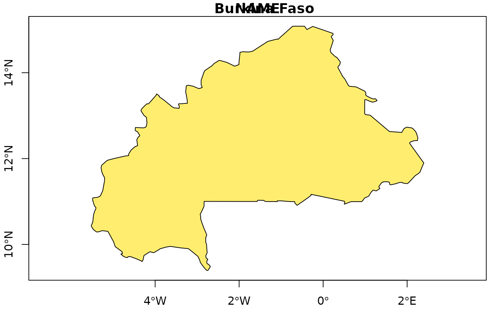
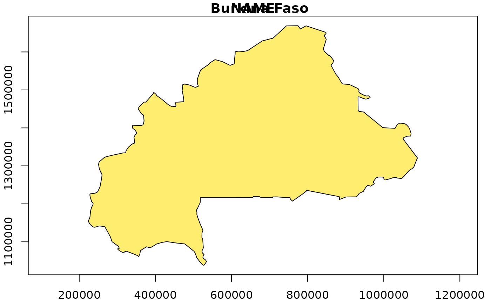
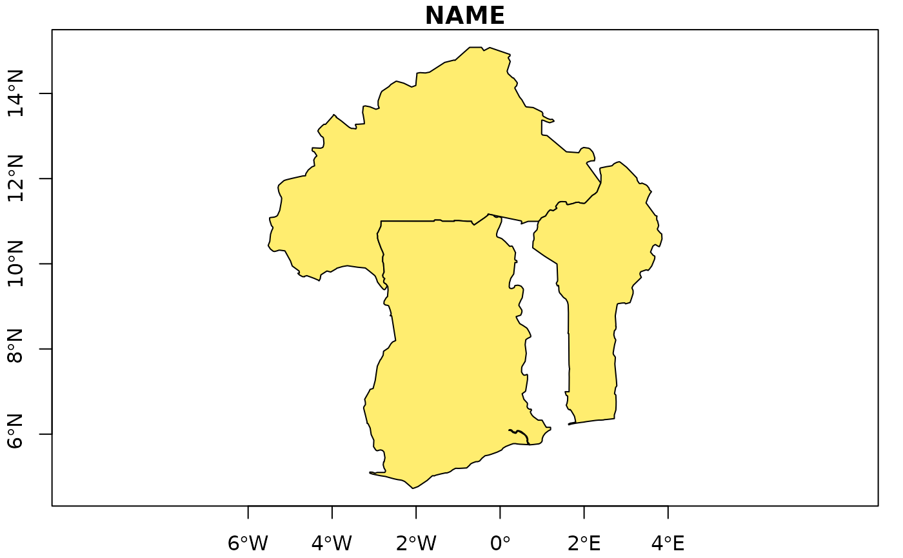

This function uses the data set TMWorldBorders. One or several countries can be selected and will be returned as an object of class sp::SpatialPolygons.
Arguments
- countries
a vector of character string corresponding to the name of the countries you want to extract from the dataset. If
NULL, a dialogue box will be appear in order to select the desired country.- multiple
should the dialog box allow multiple selection (unused if
countriesis specified)?- proj
projection of clusters coordinates used in
data(longitude and latitude in decimal degrees by default). One of (i) character: a string accepted by GDAL, (ii) integer, a valid EPSG value (numeric), or (iii) an object of classcrs, seesf::st_crs().
Value
Object of class sp::SpatialPolygons.
Examples
if (FALSE) { # \dontrun{
boundary <- create.boundary()
} # }
boundary <- create.boundary("Burkina Faso")

#> Source: World Borders Dataset 0.3 (2008)
#> Provided by Bjorn Sandvik, The dataset was derived by Schuyler Erle from public domain sources.
#> Sean Gilles did some clean up and made some enhancements.
#> The dataset is available under a Creative Commons Attribution-Share Alike License.
#> https://creativecommons.org/licenses/by-sa/3.0/
#> The boundaries, names designations used do not imply official endorsement or acceptance by the authors.
boundary <- create.boundary("Burkina Faso",
proj = "+proj=utm +zone=30 +ellps=WGS84 +datum=WGS84 +units=m +no_defs"
)

#> Source: World Borders Dataset 0.3 (2008)
#> Provided by Bjorn Sandvik, The dataset was derived by Schuyler Erle from public domain sources.
#> Sean Gilles did some clean up and made some enhancements.
#> The dataset is available under a Creative Commons Attribution-Share Alike License.
#> https://creativecommons.org/licenses/by-sa/3.0/
#> The boundaries, names designations used do not imply official endorsement or acceptance by the authors.
boundary <- create.boundary(countries = c("Burkina Faso", "Ghana", "Benin"))

#> Source: World Borders Dataset 0.3 (2008)
#> Provided by Bjorn Sandvik, The dataset was derived by Schuyler Erle from public domain sources.
#> Sean Gilles did some clean up and made some enhancements.
#> The dataset is available under a Creative Commons Attribution-Share Alike License.
#> https://creativecommons.org/licenses/by-sa/3.0/
#> The boundaries, names designations used do not imply official endorsement or acceptance by the authors.